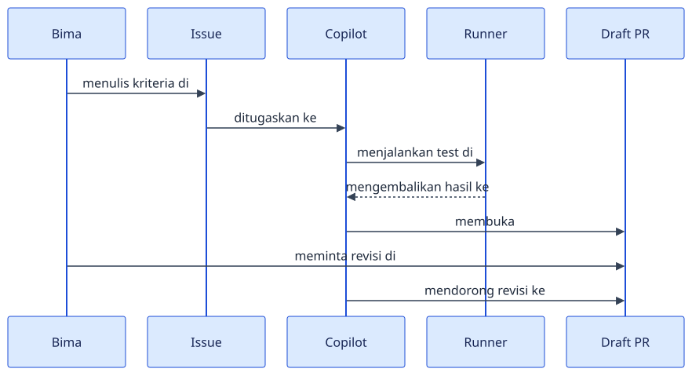
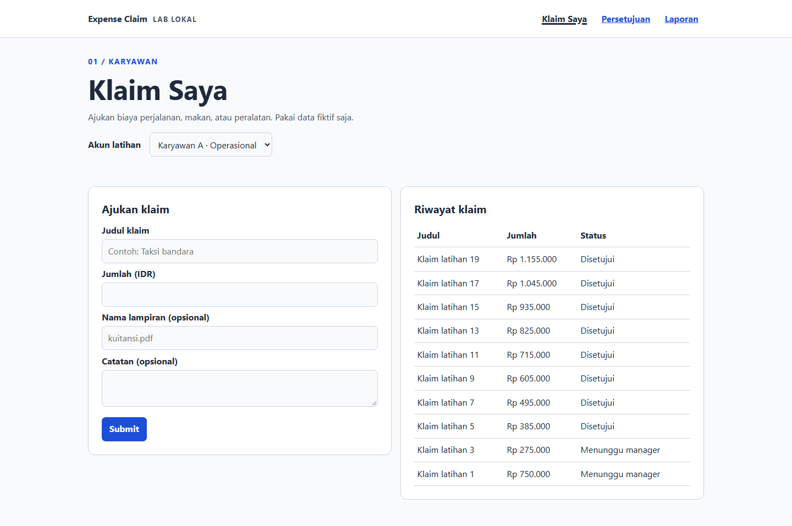
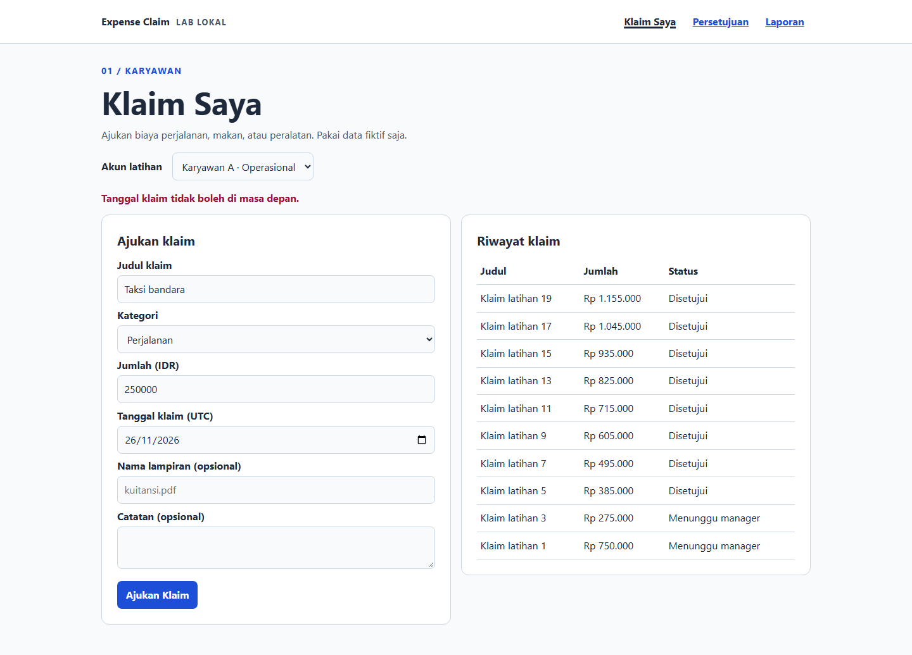
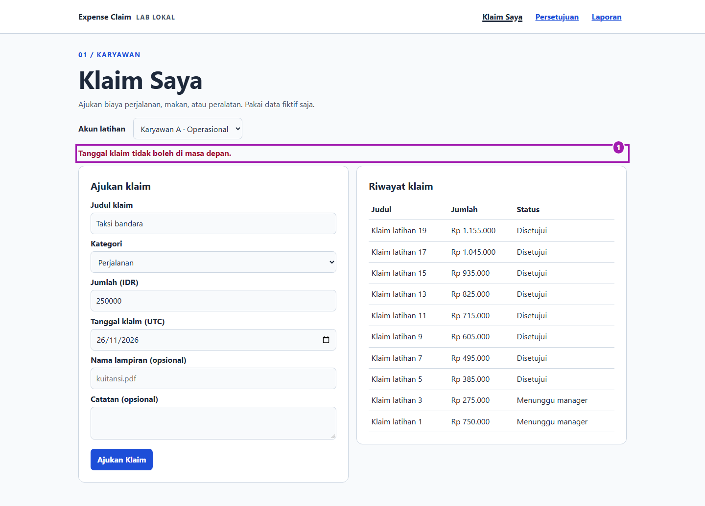

S04 / SKENARIO
Issue → Copilot → draft PR
Gunakan judul Taksi bandara dan IDR 250.000. Pada versi bertanggal, masukkan tanggal besok dan periksa pesan dari API.
Durasi 12 menit + waktu tunggu · estimasi latihan
Cerita tim
Backlog ada 40 chore (validasi, dependency, pesan error). Selalu ditunda karena sprint penuh fitur. Audit menemukan dependency ber-CVE berumur 8 bulan.
Yang disiapkan di repo
P4 — issue "Tambah claimDate + validasi tidak boleh masa depan" dengan acceptance criteria.
Pilihan solusi
Assign issue ke Copilot → agent kerja di background → jalankan test → draft PR dengan penjelasan → manusia review, minta revisi via komentar, agent revisi.

Baca alur sebagai teks
- Bima → menulis kriteria di → Issue
- Issue → ditugaskan ke → Copilot
- Copilot → menjalankan test di → Runner
- Runner → mengembalikan hasil ke → Copilot
- Copilot → membuka → Draft PR
- Bima → meminta revisi di → Draft PR
- Copilot → mendorong revisi ke → Draft PR
Langkah demo
- Baca issue latihan dan kriteria selesai.
- Gunakan prompt atau perintah berikut. Prompt atau perintah
npm run shots -- S04 - Periksa hasil: Gunakan judul Taksi bandara dan IDR 250.000. Pada versi bertanggal, masukkan tanggal besok dan periksa pesan dari API.
Before / After




- Baseline
- Form belum punya tanggal
- Target setelah latihan
- Tanggal masa depan ditolak
- Verifikasi
- Gunakan judul Taksi bandara dan IDR 250.000. Pada versi bertanggal, masukkan tanggal besok dan periksa pesan dari API.

1. Perhatikan pesan di atas form. Kotak dan nomor menandai hasil dari API.
Manfaat untuk tim
- Chore dikerjakan tanpa mengganggu senior; hasil masuk sebagai PR yang sudah lolos test; kapasitas senior kembali ke pekerjaan bernilai tinggi.
Bukti yang bisa diperiksa
- Issue GitHub · S04
- Draft Copilot (belum ada perubahan)
- Run coding agent berhenti sebelum kerja
- S04-01-issue.png
S04-02-assigned.png· belum di-captureS04-03-agent-session.png· belum di-capture- S04-04-pr-summary.png
S04-05-pr-files.png· belum di-captureS04-06-pr-checks.png· belum di-captureS04-07-revision.png· belum di-capture


Judul draft membuktikan PR terbuka, bukan perubahan kode. Screenshot aplikasi memakai branch pembanding lokal.
Ulangi latihan
Jalankan dari root repo latihan. Reset hanya menyentuh worktree lokal yang bersih.
npm run reset